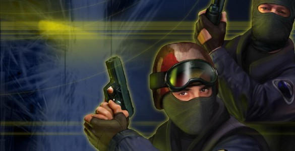

Counter-Strike (officially abbreviated as CS) is a series of multiplayer first-person shooter video games, in which teams of terrorists and counter-terrorists battle to, respectively, perpetrate an act of terror (bombing, hostage-taking) and prevent it (bomb defusal, hostage rescue). The series began on Windows in 1999 with the first version of Counter-Strike. It was initially released as a modification for Half-Life and designed by Minh "Gooseman" Le and Jess "Cliffe" Cliffe, before the rights to the game's intellectual property were acquired by Valve Corporation, the developers of Half-Life.
 The game was followed-up with Counter-Strike: Condition Zero, developed by Turtle Rock Studios and released in 2004.
Later that same year, Counter-Strike: Source was released by Valve.
Released only eight months after Counter-Strike: Condition Zero, in November 2004, the game was a remake of the original
Counter-Strike and the first in the series to run on Valve's newly created Source engine. The fourth game in the main
series to have been developed by Valve, Counter-Strike: Global Offensive, was released in 2012 for Windows, OS X, Xbox 360, and PlayStation 3.
Hidden Path Entertainment, who also worked on Counter-Strike: Source post-release, helped to develop the game alongside Valve.
Several spin-off titles have been released for Asian territories.
The game was followed-up with Counter-Strike: Condition Zero, developed by Turtle Rock Studios and released in 2004.
Later that same year, Counter-Strike: Source was released by Valve.
Released only eight months after Counter-Strike: Condition Zero, in November 2004, the game was a remake of the original
Counter-Strike and the first in the series to run on Valve's newly created Source engine. The fourth game in the main
series to have been developed by Valve, Counter-Strike: Global Offensive, was released in 2012 for Windows, OS X, Xbox 360, and PlayStation 3.
Hidden Path Entertainment, who also worked on Counter-Strike: Source post-release, helped to develop the game alongside Valve.
Several spin-off titles have been released for Asian territories.
Counter-Strike
Originally a modification for Half-Life, the rights to Counter-Strike, as well as the developers working on it, were acquired by Valve Corporation in 2000. The game received a port to Xbox in 2003. It was also ported to OS X and Linux in the form of a beta in January 2013. A full release was published in April 2013.
Counter-Strike: Source
Counter-Strike: Source was the first publicly released game by Valve Corporation to run on the Source engine. Counter-Strike: Source was initially released as a beta to members of the Valve Cyber Café Program on August 11, 2004. On August 18, 2004, the beta was released to owners of Counter-Strike: Condition Zero and those who had received a Half-Life 2 voucher bundled with some ATI Radeon video cards. While the original release only included a version for Microsoft Windows, the game eventually received a port to OS X on June 23, 2010 with a Linux port afterwards in 2013.
Counter-Strike: Global Offensive
Counter-Strike: Global Offensive (abbreviated as CS:GO) was the fourth release in the main, Valve-developed Counter-Strike series in 2012. Much like Counter-Strike: Source the game runs on the Source engine. It is available on Microsoft Windows, OSX, and Linux, as well as the Xbox 360 and PlayStation 3 consoles, and is backwards compatible on the Xbox One console.